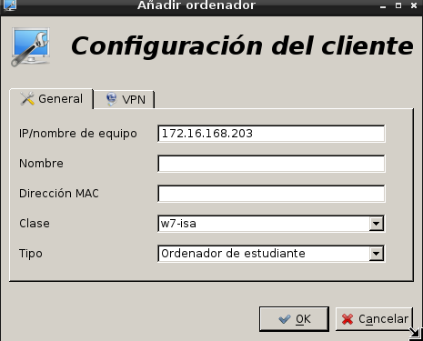

- Módulo: Fundamentos de Hardware
- Título del trabajo Control Remoto
- Componentes del grupo: Isabel Quintero Sánchez
- Curso Académico: 2013/2014
- Fecha de entrega: 20 de Mayo de 2014
En esta práctica vamos a necesitar tres Máquinas Virtuales:
Instalamos iTalc Master (Maestro) en un equipo Debian7, que creará los ficheros:

Como las claves anteriores no existen después de instalar el programa habrá que generarlas, para crear las claves de iTalc ejecutamos el comando: ica -createkeypair.

Creamos el grupo italc, y añadimos nuestro usuario "beatriz" (porque en este caso la compañera Beatriz me ha dejado su máquina ,ya que Debian tarda mucho en instalarse) al grupo:

Damos permisos al grupo italc, para tener acceso a las claves de italc con el comando: chgrp -R italc keys.
Iniciamos manualmente el servicio con el comando: /usr/bin/ica & .

Para que el servicio inicie automáticamente al iniciar sesión con el usuario "beatriz" tendremos que modificar el fichero "/home/maul/.profile", añadiendo en la última fila lo siguiente: /usr/bin/ica & .

Cliente Windows
Instalamos la misma versión de Italc Master en el Windows, en el que tenemos que copiar el fichero de clave pública del maestro para poder importarlo en los clientes. Lo hacemos mediante el pen drive: Cogemos el fichero "key" de la rua /etc/italc/keys/public/teacher.
Lo siguiente que hacemos es copiarla en la máquina de windows, cuando la instalación de Italc nos lo pida. NOTA: debemos cambiar el nombre del fichero para que nos lo detecte ("italc_dsa_key.pub").
Cliente GNU/Linux
En esta parte de la práctica he utilizado el Debian7 clonado, he desinstalado el Italc Master e instalado el Italc Client del que no he podido sacar capturas porque me había dado muchos problemas hasta que finalmente lo conseguí. Al ser una MV clonada no hace falta hacer los pasos que me indica porque se me clonan del primer punto de la práctica. Lo único que debo hacer es iniciar el sistema con el comando: /usr/bin/ica & .
Finalmente abrimos el Italc Master en el Debian7 y unimos los otros dos Italc Slaves (Windows y Debian7 clonado) para poder establecer el control remoto. Para que funcione debemos cambiar las Ip's de las máquinas virtuales y que todas esten en "Modo Puente"
Ip's de las Máquinas Virtuales: